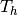
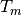
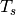
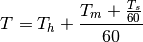
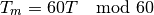
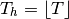

deciconv – Decimal Hour/Degree Converter¶
Analysis¶
Time, in decimal hours, is a function of Hours, , Minutes, , and Seconds, .

The reverse is also true: we can extract Hours, Minutes and Seconds from the time, if we handle time in seconds or minutes, not hours.


Degrees have an identical analysis. The only distinction between HH:MM:SS and DEG°MM’SS” is the formatting.
Implementation¶
We can use simple unit conversion class definitions for this.
hamcalc.math.deciconv – Decimal numbers to degrees/minutes/seconds.
There are two ways to handle “sexigesimal” Hour:Minute:Second and Degree:Minute:Second values.
- As tuples. (HH,MM,SS) or (DEG,MM,SS).
- As strings. "HH:MM:SS" or "DEG:MM:SS".
We provide both implementations, since strings are an extension to tuples.
Test Cases
>>> import hamcalc.math.deciconv as deciconv
>>> deciconv.HRS_MIN_SEC.to_std( "12:34:56" )
12.582222222222223
>>> deciconv.HRS_MIN_SEC.from_std( 12.582 )
'12:34:55.2'
>>> deciconv.HRS_MIN_SEC.from_std( 12.5822 )
'12:34:55.9'
>>> deciconv.HRS_MIN_SEC.from_std( 12.58222 )
'12:34:56.0'
>>> deciconv.HMS_TUPLE.to_std( (12,34,56) )
12.582222222222223
>>> deciconv.HMS_TUPLE.from_std( 12.58222 )
(12.0, 34.0, 55.99199999999837)
Legacy Quirks¶
Note that this has three places in the menu structure.
- It’s own top-level entry.
- As part of QuickTables.
- As part of the sub-menu under the equiv program. See equiv – Unit Conversions.
Perhaps this should simply be merged into equiv so that all unit conversions are in one place.
The legacy program uses multi-step input rather than parsing a single string. That’s not a quirk, per se; the lack of good string parsing is a limitation of GW-Basic.